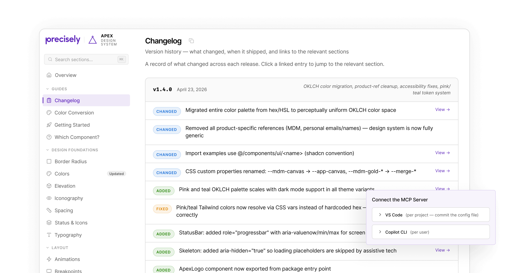
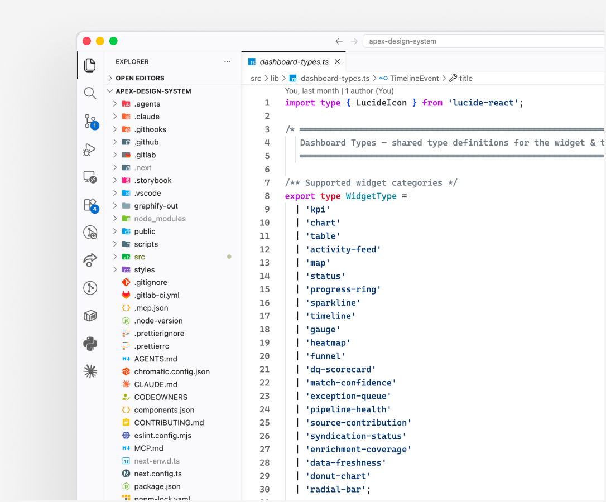
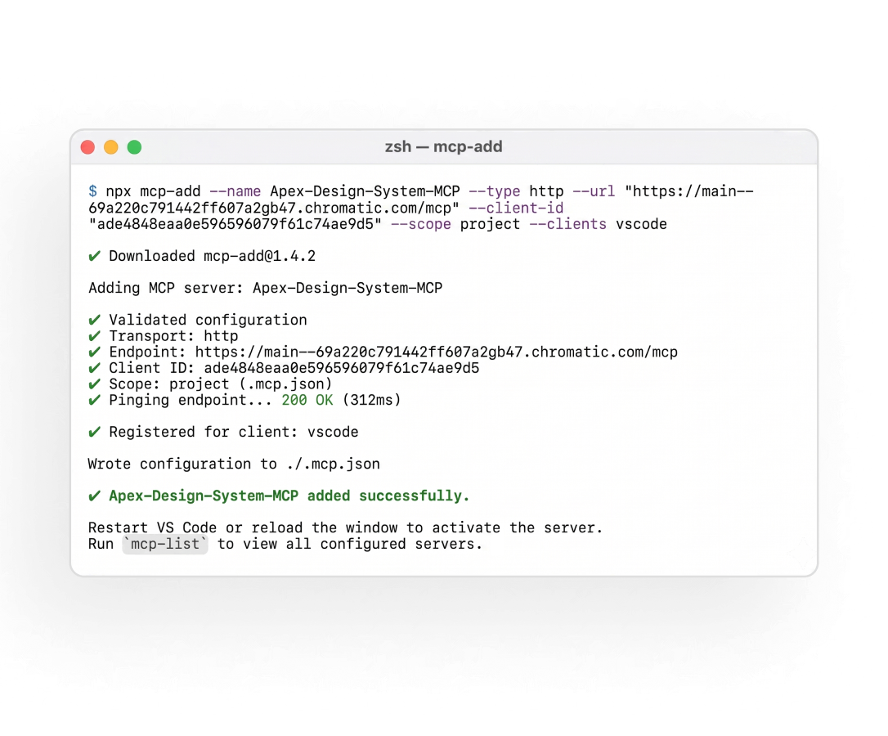
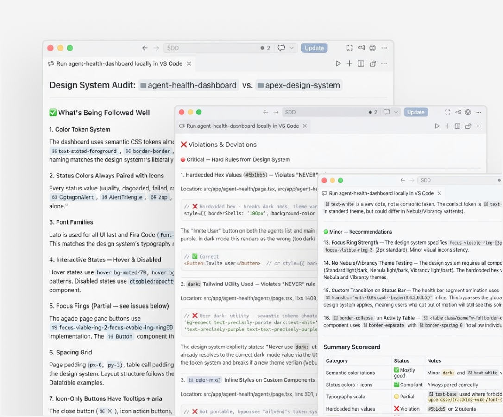
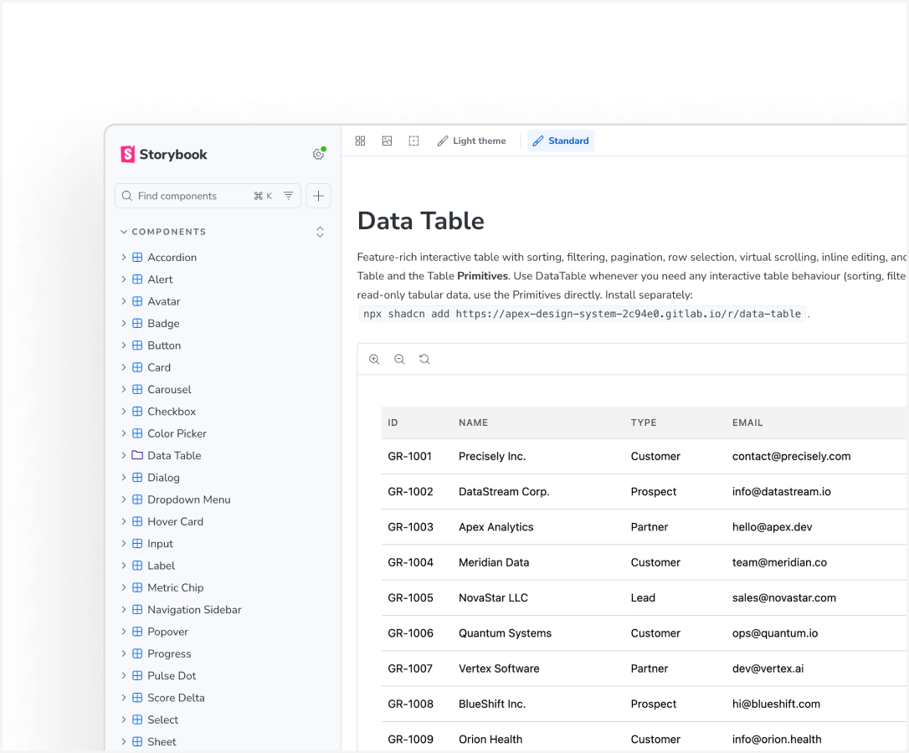
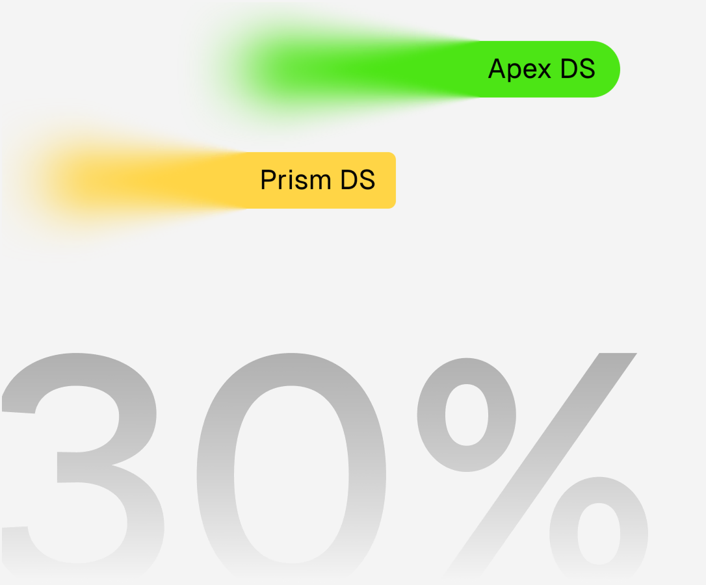
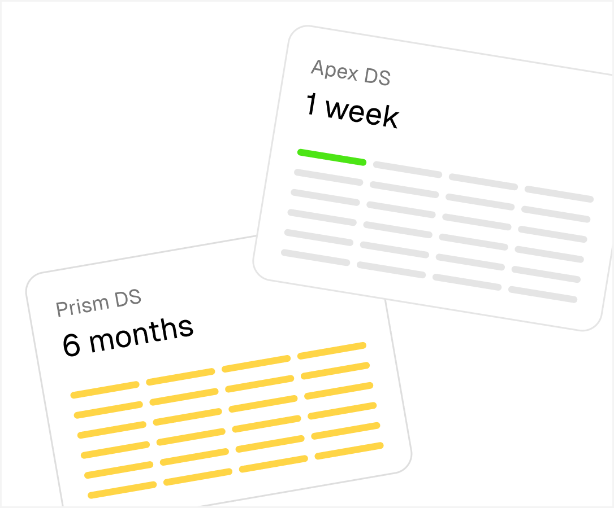
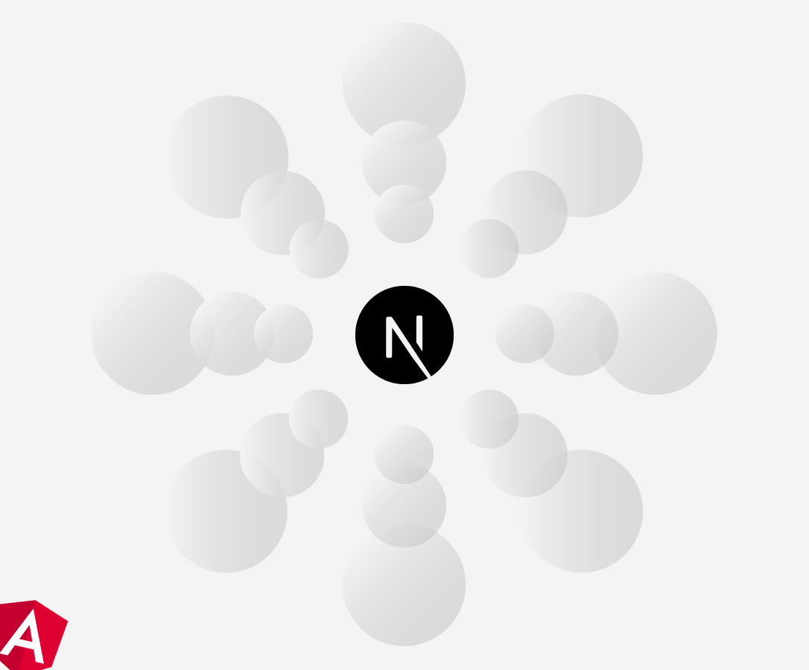

The design system that skipped Figma
A code-first design system built with agentic AI — no handoffs, governed by a custom MCP that keeps every team in sync. Design-to-ship time dropped 30%.

Precisely is an enterprise data-integrity company and a recognized leader in the category. Its Data Integrity Suite is a modular set of cloud services for integrating, governing, and improving data at scale, used by thousands of large enterprises. The work below was for this suite.
The problem
Our design system was well-built in Figma but stalled in code. With too few front-end engineers to maintain it, components drifted between design and build — and every UX validation pass turned into rework.
The real problem
The bottleneck wasn't Figma. It was the handoff itself. Across 23 designers on an enterprise suite, everyone improvised their own patterns, a central team couldn't keep pace, and design-system debt took roughly six months to clear each cycle.
What I did
Went code-first. Stress-tested agentic AI on production-grade output, then rebuilt the system directly in code on a new stack — leaving the Figma-to-code handoff behind.

Built a custom MCP. Gave the AI agent live access to the design system, so any feature is auto-checked for compliance — instead of designers manually pointing AI at a cloned repo every build.

Made it a two-way loop. When the agent flags a gap, it either re-references the rule or surfaces a missing one to contribute back — so the whole org evolves the system, not one central team.

Set the governance. Defined how designers update components and how engineers consume them, with Storybook as the component source of truth and a documentation layer for everyone else.

Impact
30% faster design-to-ship measured against the prior end-to-end feature average (1.5–2 months, validation loop included).

Design-system debt: 6 months to clear → 1 week and often none.

Adopted org-wide with the entire suite migrated off Angular in 2.5 months.

The design↔dev validation back-and-forth disappeared one role now owns both sides.
The hardest call
Agentic speed was easy, agentic quality wasn't. The real risk was AI pushing unstructured code straight to production. As the org formalized the experience-engineer role, I leaned on pairing designers with the embedded UI engineer to build genuine front-end fluency, and held the system to review gates — so we moved fast without shipping code we couldn't stand behind.